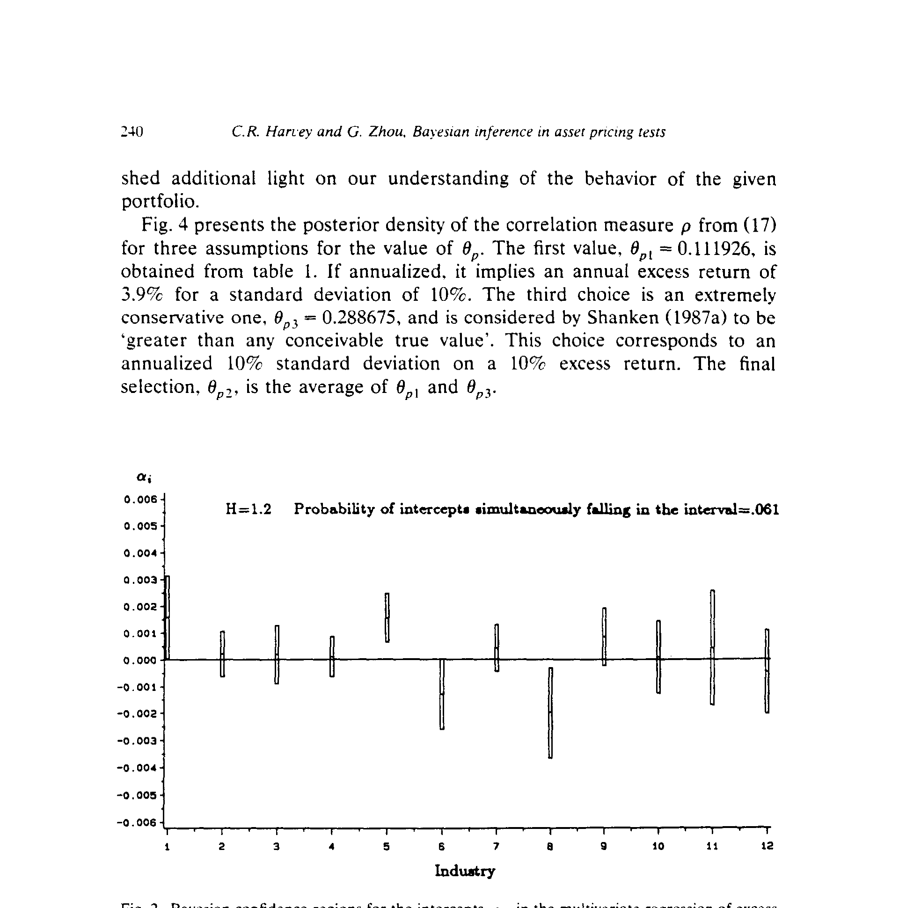
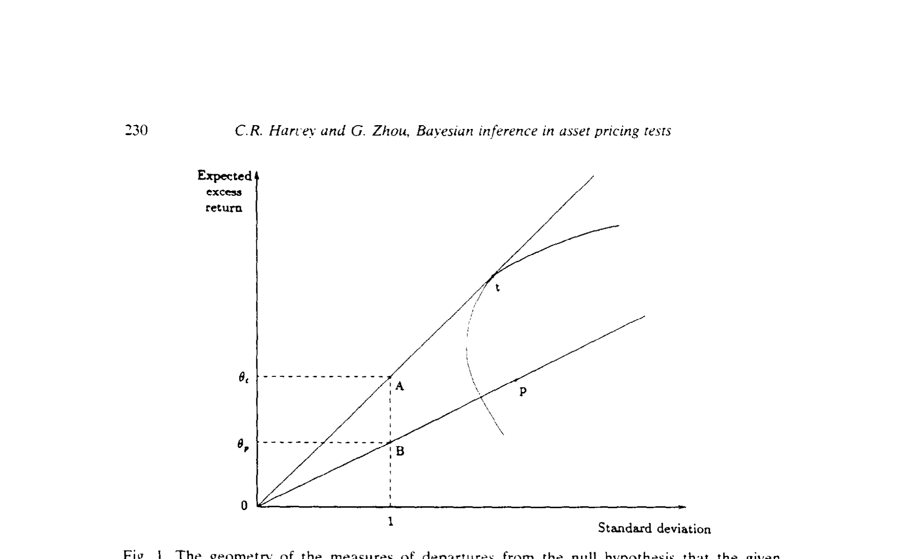
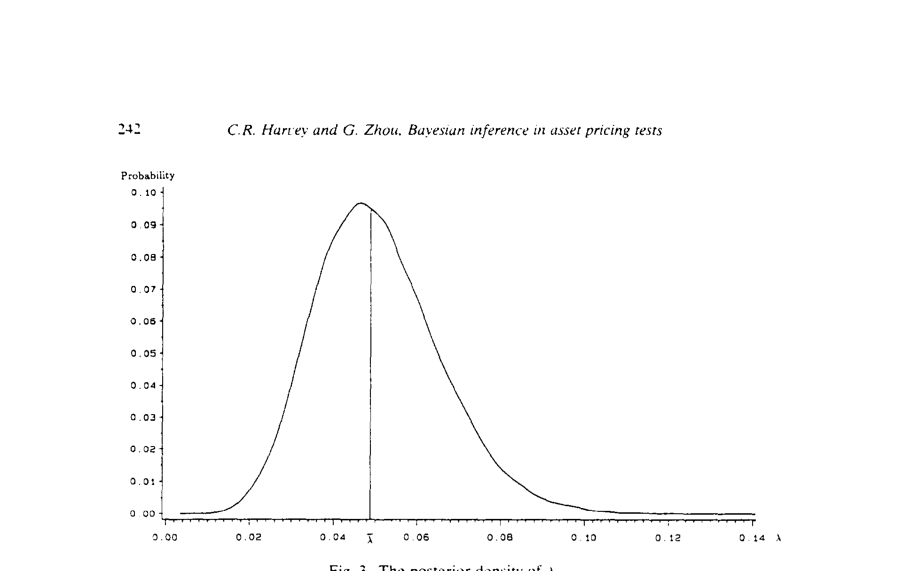
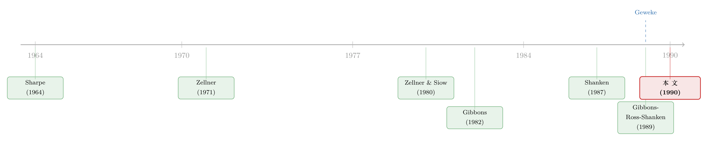

九十重积分，只为问一句：市场组合到底有没有效
本文读的是 Harvey & Zhou (1990, Journal of Financial Economics)：他们把「给定组合是否均值-方差有效」这一检验，从经典框架彻底搬进贝叶斯框架——不再像 Shanken (1987b) 那样只对截距的某个函数下先验，而是对多元回归的全部参数施加联合先验，再用蒙特卡洛数值积分硬算出多达 90 维的积分，得到后验机会比 (posterior-odds ratio)。结论是：在一系列合理先验下，价值加权的 NYSE 市场组合是均值-方差有效的概率都很小。
1 引言：两种概率，两个问题
统计推断从来有两套语言。一套是经典的 (classical)：概率是某个事件在无限次重复试验里的相对频率的极限；估计量好不好、检验灵不灵，都要放回「反复抽样」这台机器里去衡量。另一套是贝叶斯的 (Bayesian)：概率是一种信念的程度。两者的分野，说到底是一句问话的方向。
经典统计问的是：「如果参数真值是 B 和 Σ，我们观测到这批数据的概率有多大？」贝叶斯统计反过来问：「已经观测到了这批数据，那么参数 B 和 Σ 的概率分布长什么样？」后一个问题听上去更像我们真正想知道的东西——可它有个前提：你必须先说出自己对参数的先验信念。
金融学里，关于数据行为的先验信念几乎无处不在，可几乎所有实证工作却都在经典框架里完成。原因有二：一是先验怎么选，二——也是更要命的一关——后验分布往往要做高维积分，解析上根本算不动。本文里有些积分高达 90 维。但恰恰是数值积分技术的进步，让这道坎在 1990 年前后第一次变得可以例行跨越。
于是一个具体的战场摆在面前：资本资产定价模型 (capital asset pricing model, CAPM) 的检验。
2 把 CAPM 翻译成「截距等于零」
检验 Sharpe (1964) – Lintner (1965) 的 CAPM，等价于检验市场组合是否均值-方差有效 (mean-variance efficient)。把这件事写成一个多元回归：
$$r_{it} = \alpha_{ip} + \beta_{ip}\,r_{pt} + \varepsilon_{it}, \qquad i = 1,\dots,N$$
这里 r_it 是资产 i 超出国库券的超额收益，r_pt 是市场组合的超额收益。写成矩阵形式就是
$$R = XB + E$$
R 是 T×N 的超额收益矩阵，X 的第一列是 1、第二列是市场超额收益，B 的第一行装着 α、第二行装着 β。一个均值-方差有效的组合必须满足一阶条件 E[r_i] = β_ip·E[r_p]，这把要检验的限制压成了一句极干净的话：
$$\alpha_{ip} = 0, \qquad i = 1,\dots,N$$
所有截距都应该是零。市场组合若真有效，α 这个 N 维向量就该坐在原点上。
经典框架里，B 和 Σ 是常数；贝叶斯框架里，它们是随机变量。本文采用 Zellner (1971) 给出的标准弥散先验 (diffuse prior)：
$$p(B,\Sigma) \propto |\Sigma|^{-(N+1)/2}$$
这是一种「最小先验信息」的先验，用它得到的结果会和经典方法很接近。代入贝叶斯公式后，截距向量 α 的边际后验是一个多元 t 分布：
$$P(\alpha) \propto \big[\,\nu + (\alpha-\hat\alpha)'H(\alpha-\hat\alpha)\,\big]^{-(\nu+N)/2}, \qquad \nu = T - 1 - N$$
其中 α̂ 是最小二乘估计。有了这个后验，我们就能画出 α 的贝叶斯置信区域 (Bayesian confidence region)：把后验密度在某个区域上积分到 γ，落在区域外就「拒绝」。要注意它和经典置信区间的解释完全不同——贝叶斯问的是「这 N 维区域里，截距落进去的概率是多少」。

Figure 2: Bayesian confidence regions for the intercepts. a,. in the multivariate regression of excess
这里有个微妙处：当 Σ 已知、α̂ 服从正态时，本来该查高维正态表——可高维正态表根本不存在。即便用 Bonferroni 法或 Scheffé 的 S 方法构造区域，那些区域也是保守的（覆盖真值的概率至少 1−γ，于是区间偏大）。这正是后文非得请出蒙特卡洛的伏笔之一。
3 λ：一个把「无效」量出来的数
接着，一个自然的问题是：截距全为零固然干净，可我们能不能用一个标量，把「偏离有效有多远」直接量出来？本文盯住的是这个函数：
$$\lambda = \alpha'\Sigma^{-1}\alpha$$
它值得盯，有四个理由：第一，Shanken (1987a) 证明它直接联系着（有效的）切点组合与给定组合之间的相关系数；第二，它（差一个常数）正是 Shanken (1987b) 用来判断截距是否为零的那个函数；第三，它是 Gibbons, Ross & Shanken (1989) 那个著名 W 统计量里的未知参数；第四，它有解析解，正好用来给高维数值积分校准。
λ 的妙处在于它不依赖 β。因此要对它做推断，只需 α 与 Σ 的联合后验就够了。它的均值甚至能解析地写出来：
$$\bar\lambda = N a + \hat\alpha'\hat\Sigma^{-1}\hat\alpha, \qquad \hat\Sigma = (T-2)^{-1}S$$
但它的方差就解析不动了——这又是蒙特卡洛要登场的地方。
λ 的经济含义最漂亮。Shanken (1987a) 给出
$$\lambda = \theta_p^2\,(\rho^{-2} - 1)$$
θ_p 是给定组合的夏普测度 (Sharpe measure，超额收益与标准差之比) 的平方，ρ 则是给定组合与切点组合的夏普测度之比。λ = 0 等价于 ρ = 1，也就是给定组合恰好有效。Gibbons, Ross & Shanken (1989) 给出一个等价写法：
$$\lambda = \theta_t^2 - \theta_p^2$$
ρ 是相对度量，λ 是绝对度量。这两种度量的几何关系就摆在图 1 里：相关系数是两条斜率之比 slope(OB)/slope(OA)，相关系数等于 1 就意味着有效；而 λ 是 OA 与 OB 平方长度之差——平方收益没有差，λ 就是零，组合就必须有效。

Figure 1: The geometry of the measures of departures from the null hypothesis that the given
4 后验机会比：贝叶斯怎么「判决」一个尖锐假设
然后——真正关键的一步在于——怎么把「截距恰好为零」这种尖锐零假设 (sharp null hypothesis) 放进贝叶斯的天平里？
零假设是 H_0: α = 0，备择是 H_1: α ≠ 0。检验这种把参数钉死在单点上的假设，方法可以追溯到 Jeffreys (1961)。本文在零假设下用标准弥散先验，在备择下则用一个 N 维的柯西密度 (Cauchy density) f(α|Σ)——它在原点附近像零均值、协方差 kΣ 的正态，却有更肥的尾。Zellner & Siow (1980) 在一元回归里做过这件事，本文把它推广到多元回归。
判决的工具是后验机会比 (posterior-odds ratio)。在先验机会 1:1 下，它是这样一个比值：
读懂这个式子，就读懂了本文与经典检验的根本分野。经典的似然比检验，用的是极大化后的似然之比；贝叶斯的机会比，用的是按先验加权平均后的似然之比。前者只问「最好的情况能多好」，后者问「在我对参数的全部信念下，平均而言哪边更说得通」。
把 β 解析地积掉之后，分子分母可以化简。化简后会冒出一个比值 |S| / |S_R|——S 是无约束模型 OLS 残差的叉积矩阵，S_R 是把截距钉死为零后那个受约束模型的。这个比值衡量两个模型的相对拟合优度：比值越小，说明受约束模型越站不住脚，于是 K_c 越小，越不利于零假设。
为了检查推断对先验有多敏感，本文还把柯西先验换成更瘦尾的正态先验 g(α|Σ)（得到 K_n），又用了 McCulloch & Rossi (1988) 那套 Savage 密度。瘦尾的正态意味着先验质量更集中，直觉上，截距里大的偏离会给零假设提供更强的反证。三种先验，正是为了让结论别只挂在一种主观选择上。
5 九十重积分：蒙特卡洛如何让不可能成为例行公事
但所有这些后验机会比里，都藏着一个让人望而生畏的标量 Q——它要对所有非冗余参数积分。N = 12 时，积分的维数是 Σ 里不重复的元素数加上 α 的个数：
$$\frac{N(N+1)}{2} + N = \frac{12\times 13}{2} + 12 = 78 + 12 = 90$$
90 维。这种积分解析上没有任何指望，只能数值地算。本文用的是 Geweke (1988, 1989) 提出的蒙特卡洛数值积分 (Monte Carlo numerical integration)：λ 的一次「复制」就是从后验里抽一组 α_i 和 Σ_i、算一个 λ_i；把成千上万次复制的 λ_i 平均，就得到均值与标准误；把它们排序，就描出整条后验密度。λ 的均值有解析解这件事，又恰好成了检验数值积分准不准的标尺。
这是整篇论文的「核武器」：正是它，让 Shanken (1987b) 那句感叹——「一个更有抱负也更复杂的做法，会从对多元回归全部参数的联合先验出发」——第一次变成了可以真正执行的计算。
6 数据与结果
数据是 12 个 NYSE 行业组合（石油、金融与房地产、消费耐用品、基础工业、食品烟草、建筑、资本品、运输、公用事业、纺织贸易……）的月度超额收益，外加价值加权 NYSE 指数的超额收益，样本从 1926 年 2 月到 1987 年 12 月，共 743 个观测。
先验的强度怎么定？本文用一个十年子样本做贝叶斯后验分析，得到先验所隐含的相对有效度 ρ，并取切点组合夏普测度 θ_p = 0.3（Shanken 1987b 认为合理的水平）。再用一个尺度参数 k 把先验调到三档先验有效度：50%、60%、70%，看看结论稳不稳。
结果落在一句话上——也是摘要里那句：在一系列合理先验下，给定组合（价值加权 NYSE 市场组合）是均值-方差有效的概率都很小。把 λ 的后验密度画出来（图 3），它的质量明显远离了 λ = 0 这个「有效」的点；换算成相关度量 ρ，同样落在远离 1 的地方。无论用柯西、正态还是 Savage 先验，证据都指向同一个方向：市场组合不均值-方差有效。

Figure 3: The posterior density of A
这里必须如实交代：上方提供的论文正文在表格处被截断，我无法读到 Table 5、Table 6 里逐格的后验机会比数值。因此本文只报告论文文字和图所支持的定性结论，不杜撰任何具体的 K_c、K_n 数字。
7 文献脉络
把镜头拉远，这篇论文坐在两条河的交汇处。
一条河是资产定价检验。从 Sharpe (1964)、Lintner (1965) 立起 CAPM，到 Gibbons (1982) 把它写成多元检验的新形式，再到 Shanken (1985, 1986) 处理零贝塔率未知的情形，最后是 Gibbons, Ross & Shanken (1989) 那个标志性的 W 统计量——这条河一直在经典框架里流。（关于在没有无风险资产时如何判决「市场组合到底有没有效」，可参见《没有无风险资产的世界里，怎样给"市场组合有没有效"下判决》。）
另一条河是贝叶斯计量。Jeffreys (1961) 奠定了对尖锐假设做检验的思路，Zellner (1971) 把贝叶斯方法系统地引入计量经济学，Zellner & Siow (1980) 在一元回归里算出了后验机会比，而 Geweke (1988, 1989) 的蒙特卡洛积分提供了攻克高维积分的算力。

本文正是把这两条河接到了一起：用贝叶斯计量的工具，去做资产定价的检验。它与 Shanken (1987b) 的区别一句话能讲清——Shanken 只对截距的一个函数下先验，本文对全部参数下先验，因而能直接给出截距本身的后验、也能毫不费力地推广到别的问题（比如 Black (1972) 的 CAPM，那是 Shanken 的方法做不到的）。几乎同时，McCulloch & Rossi (1988, 1989) 独立地用效用损失的角度处理了套利定价理论的贝叶斯检验，思路相映成趣。（关于这条「用后验预测/效用」给 APT 换尺子的支线，可参见《"不能拒绝"就等于"支持"吗？——给套利定价理论换一把尺子》。）
8 评论与延伸（Q&A + 研究方向）
(a) 几个可能的疑问
Q：贝叶斯置信区间和经典置信区间，给出的结论不是「差不多」吗，那图什么？
数值上确实常常接近——用弥散先验时尤其如此，因为它信息量最小。但解释完全不同：经典区间说的是「反复抽样下覆盖真值的频率」，贝叶斯区间说的是「在这一组数据下，参数落进该区域的概率」。更重要的是，贝叶斯框架能给出后验机会比这种经典框架根本没有的东西——它直接告诉你零假设为真的后验概率。
Q：本文和 Shanken (1987b) 到底差在哪？
差在先验下在哪里。Shanken 把截距替换成一个函数（约等于
λ），只对这个函数下先验，所以他的检验是「间接」的，而且死死依赖 GRS 那个经典F统计量的抽样分布，换个模型（如 Black CAPM）就搬不动。本文对α、β、Σ全部下联合先验，是「直接」的，也因此通用。
Q：尖锐零假设「α 恰好等于零」在贝叶斯里不是概率为零吗，怎么检验？
正因为如此，本文用的是 Jeffreys (1961) 开创、Zellner & Siow (1980) 发展的那一套：在零假设上放一个集中的先验、在备择上放一个有质量铺开的（柯西或正态）先验，再比两边按先验加权后的平均似然。机会比
K_c就是这么定义出来的，绕开了「单点概率为零」的窘境。
Q：为什么要用三种先验（柯西、正态、Savage）？挑一个不行吗？
贝叶斯方法最受攻击的一点就是「先验是主观的」。瘦尾的正态比肥尾的柯西把更多先验质量压在零附近，对「大偏离」更敏感；Savage 密度则需要先验设定很多变量，对十年子样本的选取更不稳。三种一起上，是为了证明「市场组合无效」这个结论不是某一种先验的产物。
Q：90 维积分用蒙特卡洛算，怎么知道它没算错？
本文特意选了
λ做校准——λ的后验均值有解析解λ̄ = Na + α̂'Σ̂⁻¹α̂，把数值积分的结果和这个解析值对一对，就能验证精度。这也是为什么λ在全文里被反复当作「试金石」。
Q：结论说市场组合无效，这对 CAPM 是「判了死刑」吗？
它说的是：在一系列合理先验下，价值加权 NYSE 组合均值-方差有效的后验概率很小。但贝叶斯后验分析本身不是按某个零假设来组织的，损失函数也只衡量了统计意义，没纳入经济意义。换句话说，它是一份很强的统计证据，但「该不该据此放弃 CAPM」还要看你拿它做什么决策。
(b) 几个可能的研究问题与提案
1. 把同一套贝叶斯机会比搬到公司债的因子检验上。
【经济故事】股票上「α=0」之争已被反复检验，但公司债的因子模型（信用、期限、流动性因子）样本短、横截面相关强，正是经典 F 检验最吃力、而后验机会比最能体现价值的地方。【可行性】中。需要 TRACE 成交数据构造组合收益与一套候选因子；识别上要处理债券收益的非正态与厚尾——这恰好和贝叶斯框架对先验形状的灵活性相容。
2. 用外资持有人结构作为先验信息源。
【经济故事】本文的先验是从历史子样本「调」出来的，颇为机械。能不能让先验承载经济结构——比如「外资持有比例越高、组合越接近全球切点组合」这类信念，转化为对 λ 的先验？【可行性】中偏低。需要跨国持仓数据（如各国可投资度），且「持有人结构→有效度」的映射要有理论支撑，否则先验会沦为又一个自由参数。
3. 后验机会比 vs. 经典 GRS：在小样本、高维下的系统性对账。
【经济故事】本文在 N=12 上做了一次，但当横截面维度逼近样本长度时，经典 F 检验严重退化，而贝叶斯方法的表现尚无系统刻画。【可行性】高。纯模拟即可：固定真值，扫描 N/T 比，比较两种方法的「拒真」与「纳伪」。这类工作和 GMM 在小样本里的两副面孔 一脉相承。
4. 把流动性维度并进 λ。
【经济故事】λ = θ_t² − θ_p² 衡量的是「离切点组合有多远」，但若投资者真正关心的是流动性调整后的有效前沿，λ 该怎么改写？【可行性】中。需要一个把流动性成本写进夏普测度的设定，再在贝叶斯框架下重估后验——数据上可用公司债流动性度量来落地。
评述者的判断
这篇论文的贡献，不在于它「又一次拒绝了 CAPM」，而在于它把一件长期被认为「算不动」的事算动了。Shanken 自己都把「对全部参数下联合先验」称作一条更有抱负、也更复杂的路；本文借 Geweke 的蒙特卡洛积分，把这条路走通了，还顺手给出了置信区域、λ 与 ρ 的完整后验密度、以及对先验的敏感性分析。方法上的通用性是它最持久的价值——它不依赖任何特定统计量的抽样分布，因而能被搬到 Black CAPM、套利定价乃至别的多元限制检验上。
对识别（在这里更准确地说是「推断的稳健性」）的担忧也很清楚：结论对先验的依赖始终是贝叶斯方法绕不开的软肋，本文用三种先验来缓解，但先验强度的「调校」（十年子样本、θ_p=0.3、k 调到三档有效度）仍带有不小的人为成分；而 90 维蒙特卡洛积分的数值精度，除了 λ 这一处解析校准外，其余维度上读者只能选择信任。
后续我最想看到的，是把这套机会比放到更高维、样本更短的现代资产空间里去压力测试——尤其是公司债与信用市场，那里横截面相关强、收益厚尾、样本期短，正是经典检验最容易给出误导性 t 值、而贝叶斯平均最可能改写结论的地方。
参考文献
Black, F. (1972). Capital market equilibrium with restricted borrowing. Journal of Business 45, 444–454.
Geweke, J. (1988). Antithetic acceleration of Monte Carlo integration in Bayesian inference. Journal of Econometrics 38, 73–90.
Geweke, J. (1989). Bayesian inference in econometric models using Monte Carlo integration. Econometrica 57, 1317–1339.
Gibbons, M. R. (1982). Multivariate tests of financial models: A new approach. Journal of Financial Economics 10, 3–27.
Gibbons, M. R., Ross, S. A., & Shanken, J. (1989). A test of the efficiency of a given portfolio. Econometrica 57, 1121–1152.
Harvey, C. R., & Zhou, G. (1990). Bayesian inference in asset pricing tests. Journal of Financial Economics 26(2), 221–254.
Jeffreys, H. (1961). The Theory of Probability. Oxford University Press.
Lintner, J. (1965). The valuation of risk assets and the selection of risky investments in stock portfolios and capital budgets. Review of Economics and Statistics 47, 13–37.
McCulloch, R., & Rossi, P. E. (1988). Testing the arbitrage pricing theory: Predictive distributions, posterior distributions and odds ratios. Working paper, University of Chicago.
Shanken, J. (1987a). Multivariate proxies and asset pricing relations: Living with the Roll critique. Journal of Financial Economics 18, 91–110.
Shanken, J. (1987b). A Bayesian approach to testing portfolio efficiency. Journal of Financial Economics 19, 195–216.
Sharpe, W. F. (1964). Capital asset prices: A theory of market equilibrium under conditions of risk. Journal of Finance 19, 425–442.
Zellner, A. (1971). An Introduction to Bayesian Inference in Econometrics. Wiley.
Zellner, A., & Siow, A. (1980). Posterior odds ratios for selected regression hypotheses. In J. M. Bernardo et al. (eds.), Bayesian Statistics. University Press.